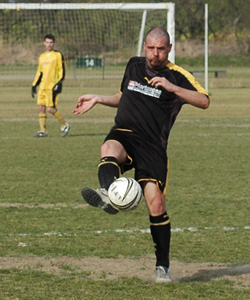
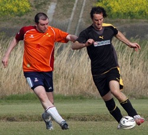
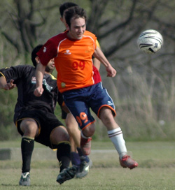
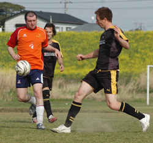
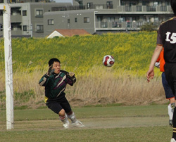

|
Misato, Sunday 5th April
Feeling pretty sick after back to back nomihoudais, the only consolation on Sunday morning was that full-back Lee was driving and giving me a lift to the wind funnel of Saitama and Misato. After watching the end of the eventful Maritizio vs Dutch game we finally kicked off, and the ref was in for a much more peaceful game. Once again the pitch was dusty and the bounce uneven. A gust of wind swept sand into our eyes as we lined up, fitting for what was to come.
Panthers started with 5 changes from last week's win against Shane, but it seems that we finally have some strength in depth and we were confident that we could make this 9 unbeaten in Division 3 with the players we had out. With Shane demolishing Sun Utd earlier in the day it was our chance to cement 3rd and keep the pressure on for 2nd place and promotion.
After winning a classic Janken (scissors over paper) I decided that we should use the wind and try our best to gain an advantage early on. King George had back to back wins so we didn't expect to get an easy game and they worked hard from the start, putting in a lot of strong challenges and competing for everything.
We played most of the first 40 minutes in their half and quickly took control of the game. Again Rick Zwart was at the heart of everything in the Panthers midfield winning almost every single header.

We started up front with Saco and Sho, and both looked dangerous from the start with their movement and pace down the channels. The game lacked any rhythm due to the ball flying out into the ditches for throw ins, followed by players chasing it down and we used about 4 different balls during the half as a result!
We proceeded to bombard the King George penalty area with corners and Rick's long-throws/corner like weapon which is proving to be very valuable in the second half of this season. The wide players did a great job, and a lot of our best attacking play came from Mikhail and especially Kev Gray down the right. He was a constant threat and linked well with the strikers to get behind them. We were putting a lot of quality early balls in and kept threatening.
The first goal came from the left. The ball bounced in the centre of midfield and I played it back to Alan Yang at left back. He passed it onto Mikhail wide on the left touchline who found himself with a little time to compose himself and deliver a cross which got a slight deflection. Sho made a great run to the near post and headed it smartly past the keeper.

Our next goal was pretty untidy - a high ball was played into the box where Sid & Rick were waiting with a couple of defenders, but with the wind noone could tell where the ball would fall. Rick lept like a salmon, but the ball bounced off a defender's head and looped over the keeper into the net. Another og, but welcomed! Best move of the match came down the right soon afterwards – excellent 2 touch football between Kev and Sho took us behind them again. Kev sent a Beckham like curling cross which bounced perfectly into the path of Sid Lloyd who connected on the half volley but agonisingly it went inches wide from 4 yards out. Advantage Gray – if ever there was an opportunity to fuel their love-hate relationship surely this was it.
We went in at half time 2-0 up.
The second half started similarly to the 1st although the wind was giving our defenders more difficulty and there were a few awkward balls which bounced here or there, but as usual the reliable Andy Vaughan swept things up without too much trouble.
We had a lot more goal mouth action but failed to capitalise on our chances. Eventually Saco got his reward. After dribbling left and right for about 2 minutes he finally turned and almost toed the ball in. A screaming Sid was about to murder him if he didn’t score.
After that the game was pretty stretched and we continued to pile on pressure from both flanks and must have had 10 corners. Kei connected with a great half volley from just outside the box, which unfortunately went straight at the keeper. The King George keeper had flown past the pitch entrance and only just made kick off earlier, but his handling and positioning on the pitch proved to be important and he had a good game.
Two clearances off the line came next, but more honestly one was a horrific open goal miss! Keeper came out and missed the ball and Saco found himself 6 yards out, with a wide open goal at his mercy. He somehow scuffed the shot and the defender got back and cleared it. Soon afterwards the same defender cleared again, this time right on the line, I think from a corner! I remember a few half chances too, I tried chipping the keeper and failed, and Sid had two pokes with the outside of his right foot which swept more sand from the ground.
I have only scored one goal for the Panthers, my first ever game back in late 2007. However the second finally came – assisted by Sid who calmly nodded down a cross from the left which I volleyed past the keeper (he made me thank him for the assist afterwards!) 4-0.

Sid also had a strong case for a penalty close to the end of the game when he met a through ball from Mikhail on the run, chipped the ball over the keeper only to by scythed down before he could finish it. A defender cleared the ball & the ref waved play on. We continued going forward right up until the final whistle. Again Saco was doing kick ups in the penalty area, he turned and slid the ball across to the rampaging Kev Gray.
Kev is never shy to have a crack from anywhere on the pitch, and this would surely be his chance to thrust the dagger into Sid’s heart and justify playing up front. He could send out a message and derail his nemesis. Suddenly the sirens started to ring loudly around Saitama as Kev connected with the shot - North Korea apparently were launching their “satellite” into orbit.
The defence ministry issued its final alert and the missile defence system had been activated. What we saw next was an extraordinary sight as missile after missile began lighting the skies as they tried to intercept the target which embarrassingly for them turned out to be a size 5 orange football, seemingly floating into outer space.
The referee had already blown but the war had begun. The players are calling for a peaceful resolution and dialogue to commence between the two BFC veterans. Next stop Todoroki and Stoneds. I hope we can shoot that ball down by then.
Report by Romen Barua
|
 
 |